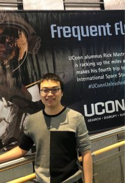
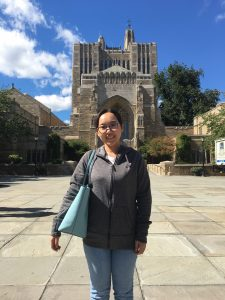

Generative molecular design
We develop diffusion models and fragment-based methods to generate small molecules. Our work includes both 3D molecular generation and ligand design conditioned on a protein pocket.
PocketVE VEDAWe develop machine learning methods for small-molecule design, protein–ligand modeling, and chemical search.
Our work spans the design of new molecules, the modeling of their interactions with proteins, and the search of large chemical libraries.
We develop diffusion models and fragment-based methods to generate small molecules. Our work includes both 3D molecular generation and ligand design conditioned on a protein pocket.
PocketVE VEDAWe represent molecules as graphs and 3D surfaces to predict molecular properties and protein–ligand binding affinity.
OctSurf Edge-aware GCNWe benchmark indexing algorithms that retrieve structurally similar molecules efficiently from large compound libraries.
Indexing benchmarkPrincipal investigator
Professor of Computer Science & Engineering at the University of Connecticut. Her research spans machine learning, mathematical optimization, health informatics, and drug discovery.
Faculty websitePh.D. student
Foundation models, spatiotemporal modeling, and Earth science
Associate Professor
Department of Anesthesiology, WashU Medicine
GPCR structure, signaling, and pharmacology
Ph.D. ’24

Senior Scientist, Walmart Global Tech
Ph.D. ’24
Senior Scientist, Walmart Global Tech
Ph.D. ’23

Research Assistant Professor, Case Western Reserve University
Postdoctoral fellow, through 2021
Research Scientist, New York State Department of Health
Postdoctoral fellow, 2016–2018
Ph.D. ’17
Ph.D. ’16
Undergraduate researcher · Class of 2017
M.S. ’17
Undergraduate researcher · Class of 2017
Undergraduate researcher · Class of 2016
M.S. ’15
M.S. ’14
M.S. ’14
M.S. ’12
M.S. ’12
Undergraduate researcher · Class of 2012
M.S. ’12
Undergraduate researcher
Undergraduate researcher
Undergraduate researcher
Undergraduate researcher
Undergraduate researcher
Undergraduate researcher
Undergraduate researcher
Undergraduate researcher